<!DOCTYPE html>
<html lang="zh-CN">
<head>
  <meta charset="UTF-8">
  <meta name="viewport" content="width=device-width, initial-scale=1.0, viewport-fit=cover">
  <meta name="description" content="《瘟疫危机：传承·第0季》（Pandemic Legacy: Season 0）官方英文规则书全文中文翻译：合作 · 传承 · 冷战谍战前传，16 页整本译出，含设置、流程、计分与附录，附官方原文 PDF 链接。">
  <title data-zh="瘟疫危机：传承·第0季 (Pandemic Legacy: Season 0) · 规则 — 桌游规则书" data-en="Pandemic Legacy: Season 0 · Rules — Board Game Rules">瘟疫危机：传承·第0季 (Pandemic Legacy: Season 0) · 规则 — 桌游规则书</title>
  <link rel="icon" href="data:image/svg+xml,<svg xmlns='http://www.w3.org/2000/svg' viewBox='0 0 100 100'><text y='0.9em' font-size='90'>🕵️</text></svg>">
  <link rel="stylesheet" href="../assets/css/style.css">
  <link rel="canonical" href="https://rule.zhibinai.cn/games/pandemic-legacy-season-0.html">
  <meta property="og:site_name" content="桌游规则书">
  <meta property="og:locale" content="zh_CN">
  <meta property="og:type" content="article">
  <meta property="og:title" content="瘟疫危机：传承·第0季 (Pandemic Legacy: Season 0) · 规则 — 桌游规则书">
  <meta property="og:description" content="《瘟疫危机：传承·第0季》（Pandemic Legacy: Season 0）官方英文规则书全文中文翻译：合作 · 传承 · 冷战谍战前传，16 页整本译出，含设置、流程、计分与附录，附官方原文 PDF 链接。">
  <meta property="og:url" content="https://rule.zhibinai.cn/games/pandemic-legacy-season-0.html">
  <meta property="og:image" content="https://rule.zhibinai.cn/assets/img/pandemic-legacy-season-0/01.webp">
  <meta name="twitter:card" content="summary_large_image">
  <meta name="twitter:title" content="瘟疫危机：传承·第0季 (Pandemic Legacy: Season 0) · 规则 — 桌游规则书">
  <meta name="twitter:description" content="《瘟疫危机：传承·第0季》（Pandemic Legacy: Season 0）官方英文规则书全文中文翻译：合作 · 传承 · 冷战谍战前传，16 页整本译出，含设置、流程、计分与附录，附官方原文 PDF 链接。">
  <script type="application/ld+json">{
 "@context": "https://schema.org",
 "@graph": [
  {
   "@type": "WebSite",
   "@id": "https://rule.zhibinai.cn/#website",
   "name": "桌游规则书",
   "url": "https://rule.zhibinai.cn/",
   "inLanguage": "zh-CN",
   "description": "免费中文桌游规则书查询站：热门桌游完整中文规则全文 + Board Game Arena 全量官方规则中文版。"
  },
  {
   "@type": "WebPage",
   "@id": "https://rule.zhibinai.cn/games/pandemic-legacy-season-0.html",
   "url": "https://rule.zhibinai.cn/games/pandemic-legacy-season-0.html",
   "name": "瘟疫危机：传承·第0季 (Pandemic Legacy: Season 0) · 规则 — 桌游规则书",
   "description": "《瘟疫危机：传承·第0季》（Pandemic Legacy: Season 0）官方英文规则书全文中文翻译：合作 · 传承 · 冷战谍战前传，16 页整本译出，含设置、流程、计分与附录，附官方原文 PDF 链接。",
   "isPartOf": {
    "@id": "https://rule.zhibinai.cn/#website"
   },
   "inLanguage": "zh-CN",
   "dateModified": "2026-11-09",
   "primaryImageOfPage": {
    "@type": "ImageObject",
    "url": "https://rule.zhibinai.cn/assets/img/pandemic-legacy-season-0/01.webp"
   }
  },
  {
   "@type": "BreadcrumbList",
   "itemListElement": [
    {
     "@type": "ListItem",
     "position": 1,
     "name": "首页",
     "item": "https://rule.zhibinai.cn/"
    },
    {
     "@type": "ListItem",
     "position": 2,
     "name": "瘟疫危机：传承·第0季 (Pandemic Legacy: Season 0)",
     "item": "https://rule.zhibinai.cn/games/pandemic-legacy-season-0.html"
    }
   ]
  }
 ]
}</script>
  <!-- seo-wired -->
</head>
<body data-theme="pandemic-legacy-season-0" data-game-key="pandemic-legacy-season-0">

  <div class="progress-bar" aria-hidden="true"></div>

  <header class="topbar">
    <button class="menu-btn" aria-label="打开目录" aria-expanded="false" data-i18n-aria="openToc">☰</button>
    <a class="brand" href="../index.html" data-i18n="brand">🎲 桌游规则书</a>
    <span class="topbar-title" data-zh="瘟疫危机：传承·第0季" data-en="Pandemic Legacy: Season 0">瘟疫危机：传承·第0季</span>
  </header>

  <div class="layout">
    <aside class="sidebar" id="sidebar">
      <nav class="toc" aria-label="本页目录" data-i18n-aria="onThisPage">
        <div class="toc-title" data-i18n="onThisPage">本页目录</div>
        <ul id="toc-list"></ul>
      </nav>
      <nav aria-label="全部游戏" data-i18n-aria="allGames">
        <div class="toc-title" data-i18n="allGames">全部游戏</div>
        <ul>
          <li><a href="../index.html" data-i18n="home">🏠 返回首页</a></li>
          <li><a href="7-wonders.html" data-zh="🏛️ 七大奇迹" data-en="🏛️ 7 Wonders">🏛️ 七大奇迹</a></li>
          <li><a href="brass-birmingham.html" data-zh="🏭 工业革命：伯明翰" data-en="🏭 Brass: Birmingham">🏭 工业革命：伯明翰</a></li>
          <li><a href="vale-of-eternity.html" data-zh="✨ 永恒之谷" data-en="✨ The Vale of Eternity">✨ 永恒之谷</a></li>
          <li><a href="wingspan.html" data-zh="🦜 展翅翱翔" data-en="🦜 Wingspan">🦜 展翅翱翔</a></li>
          <li><a href="pokemon-grove.html" data-zh="🌳 宝可梦林地探索" data-en="🌳 Pokemon Grove">🌳 宝可梦林地探索</a></li>
          <li><a href="puerto-rico.html" data-zh="⛵ 波多黎各" data-en="⛵ Puerto Rico">⛵ 波多黎各</a></li>
          <li><a href="barcelona.html" data-zh="🌸 巴塞罗那" data-en="🌸 Barcelona">🌸 巴塞罗那</a></li>
          <li><a href="dune-imperium.html" data-zh="🏜️ 沙丘：帝国" data-en="🏜️ Dune: Imperium">🏜️ 沙丘：帝国</a></li>
          <li><a href="dune-imperium-uprising.html" data-zh="🪱 沙丘：帝国起义" data-en="🪱 Dune: Imperium – Uprising">🪱 沙丘：帝国起义</a></li>
          <li><a href="ascension.html" data-zh="🃏 创升纪元" data-en="🃏 Ascension">🃏 创升纪元</a></li>
          <li><a href="tulip-bubble.html" data-zh="🌷 郁金香泡沫" data-en="🌷 Tulip Bubble">🌷 郁金香泡沫</a></li>
          <li><a href="trajan.html" data-zh="🦅 图拉真" data-en="🦅 Trajan">🦅 图拉真</a></li>
          <li><a href="galileo-galilei.html" data-zh="🔭 伽利略：伽利莱" data-en="🔭 Galileo Galilei">🔭 伽利略：伽利莱</a></li>
          <li><a href="orloj.html" data-zh="🕰️ 奥洛伊：布拉格天文钟" data-en="🕰️ Orloj: The Prague Astronomical Clock">🕰️ 奥洛伊：布拉格天文钟</a></li>
          <li><a href="food-chain-magnate.html" data-zh="🍔 快餐连锁大亨" data-en="🍔 Food Chain Magnate">🍔 快餐连锁大亨</a></li>
          <li><a href="clank-catacombs.html" data-zh="🐉 CLANK! 地下墓穴" data-en="🐉 Clank!: Catacombs">🐉 CLANK! 地下墓穴</a></li>
          <li><a href="clank-catacombs-underworld.html" data-zh="💀 CLANK! 地下墓穴:地下世界" data-en="💀 Clank! Catacombs: Underworld">💀 CLANK! 地下墓穴:地下世界</a></li>
          <li><a href="clank-adventuring-party.html" data-zh="🗡️ CLANK! 冒险队" data-en="🗡️ Clank!: Adventuring Party">🗡️ CLANK! 冒险队</a></li>
          <li><a href="ark-nova-marine-worlds.html" data-zh="🐙 方舟动物园：海洋世界" data-en="🐙 Ark Nova: Marine Worlds">🐙 方舟动物园：海洋世界</a></li>
          <li><a href="arnak-expedition-leaders.html" data-zh="🗿 阿纳克遗迹:探险队长" data-en="🗿 Lost Ruins of Arnak: Expedition Leaders">🗿 阿纳克遗迹:探险队长</a></li>
          <li><a href="speakeasy.html" data-zh="🎷 地下酒吧" data-en="🎷 Speakeasy">🎷 地下酒吧</a></li>
          <li><a href="power-grid.html" data-zh="⚡ 电力公司" data-en="⚡ Power Grid">⚡ 电力公司</a></li>
          <li><a href="seti.html" data-zh="🛰️ SETI：寻找外星人" data-en="🛰️ SETI: Search for Extraterrestrial Intelligence">🛰️ SETI：寻找外星人</a></li>
          <li><a href="seti-space-agencies.html" data-zh="🚀 地外文明：太空机构" data-en="🚀 SETI: Space Agencies">🚀 地外文明：太空机构</a></li>
          <li><a href="white-castle.html" data-zh="🏯 姬路城" data-en="🏯 The White Castle">🏯 姬路城</a></li>
          <li><a href="white-castle-matcha.html" data-zh="🍵 姬路城：茶道" data-en="🍵 The White Castle: Matcha">🍵 姬路城：茶道</a></li>
          <li><a href="endeavor-deep-sea.html" data-zh="🌊 奋进号：深海" data-en="🌊 Endeavor: Deep Sea">🌊 奋进号：深海</a></li>
          <li><a href="druids-of-edora.html" data-zh="🌲 埃多拉的德鲁伊" data-en="🌲 The Druids of Edora">🌲 埃多拉的德鲁伊</a></li>
          <li><a href="grand-austria-hotel.html" data-zh="🏨 奥地利大饭店" data-en="🏨 Grand Austria Hotel">🏨 奥地利大饭店</a></li>
          <li><a href="the-message.html" data-zh="🕵️ 风声再临" data-en="🕵️ The Message">🕵️ 风声再临</a></li>
          <li><a href="gwt-new-zealand.html" data-zh="🐑 大西部开拓者:新西兰" data-en="🐑 Great Western Trail: New Zealand">🐑 大西部开拓者:新西兰</a></li>
          <li><a href="fields-of-arle.html" data-zh="🌾 阿勒農場" data-en="🌾 Fields of Arle">🌾 阿勒農場</a></li>
          <li><a href="gaiaproject-lost-fleet.html" data-zh="🌌 盖亚计划:失落的舰队" data-en="🌌 Gaia Project: The Lost Fleet">🌌 盖亚计划:失落的舰队</a></li>
          <li><a href="spirit-island.html" data-zh="🏝️ 灵迹岛" data-en="🏝️ Spirit Island">🏝️ 灵迹岛</a></li>
          <li><a href="harmonies.html" data-zh="🦁 自然和弦" data-en="🦁 Harmonies">🦁 自然和弦</a></li>
          <li><a href="agricola-revised.html" data-zh="🌾 农场主（修订版）" data-en="🌾 Agricola (Revised Edition)">🌾 农场主（修订版）</a></li>
          <li><a href="final-girl.html" data-zh="🎬 最终女孩" data-en="🎬 Final Girl">🎬 最终女孩</a></li>
          <li><a href="le-havre.html" data-zh="⚓ 勒阿弗尔" data-en="⚓ Le Havre">⚓ 勒阿弗尔</a></li>
          <li><a href="lotr-duel-for-middle-earth.html" data-zh="🌋 魔戒：中土对决" data-en="🌋 The Lord of the Rings: Duel for Middle-earth">🌋 魔戒：中土对决</a></li>
          <li><a href="marvel-champions.html" data-zh="🦸 漫威群英传：卡牌版" data-en="🦸 Marvel Champions: The Card Game">🦸 漫威群英传：卡牌版</a></li>
          <li><a href="nemesis.html" data-zh="👽 复仇女神号" data-en="👽 Nemesis">👽 复仇女神号</a></li>
          <li><a href="pandemic-legacy-season-1.html" data-zh="🦠 瘟疫危机：传承·第一季" data-en="🦠 Pandemic Legacy: Season 1">🦠 瘟疫危机：传承·第一季</a></li>
          <li><a href="android-netrunner.html" data-zh="🤖 安卓：潜袭" data-en="🤖 Android: Netrunner">🤖 安卓：潜袭</a></li>
          <li><a href="arkham-horror-lcg.html" data-zh="🔍 诡镇奇谈：卡牌版" data-en="🔍 Arkham Horror: The Card Game">🔍 诡镇奇谈：卡牌版</a></li>
          <li><a href="bomb-busters.html" data-zh="💣 拆弹小队" data-en="💣 Bomb Busters">💣 拆弹小队</a></li>
          <li><a href="cascadia.html" data-zh="🌲 卡斯卡迪亚" data-en="🌲 Cascadia">🌲 卡斯卡迪亚</a></li>
          <li><a href="everdell.html" data-zh="🌰 仙境幽谷" data-en="🌰 Everdell">🌰 仙境幽谷</a></li>
          <li><a href="five-tribes.html" data-zh="🏜️ 五大部落" data-en="🏜️ Five Tribes: The Djinns of Naqala">🏜️ 五大部落</a></li>
          <li><a href="kanban-ev.html" data-zh="🚗 看板：电动汽车版" data-en="🚗 Kanban EV">🚗 看板：电动汽车版</a></li>
          <li><a href="lisboa.html" data-zh="🏛️ 里斯本" data-en="🏛️ Lisboa">🏛️ 里斯本</a></li>
          <li><a href="mage-knight.html" data-zh="🧙 魔骑士" data-en="🧙 Mage Knight Board Game">🧙 魔骑士</a></li>
          <li><a href="mansions-of-madness-2e.html" data-zh="🏚️ 疯狂诡宅（第二版）" data-en="🏚️ Mansions of Madness: Second Edition">🏚️ 疯狂诡宅（第二版）</a></li>
          <li><a href="paladins-of-the-west-kingdom.html" data-zh="🛡️ 西王国的圣骑士" data-en="🛡️ Paladins of the West Kingdom">🛡️ 西王国的圣骑士</a></li>
          <li><a href="pandemic-legacy-season-2.html" data-zh="🧭 瘟疫危机：传承·第二季" data-en="🧭 Pandemic Legacy: Season 2">🧭 瘟疫危机：传承·第二季</a></li>
          <li><a href="quacks.html" data-zh="🧪 奎德林堡的江湖郎中" data-en="🧪 Quacks">🧪 奎德林堡的江湖郎中</a></li>
          <li><a href="root.html" data-zh="🦊 茂林源记" data-en="🦊 Root">🦊 茂林源记</a></li>
          <li><a href="slay-the-spire-bg.html" data-zh="🗡️ 杀戮尖塔：版图游戏" data-en="🗡️ Slay the Spire: The Board Game">🗡️ 杀戮尖塔：版图游戏</a></li>
          <li><a href="star-wars-imperial-assault.html" data-zh="🎯 星球大战：帝国突击" data-en="🎯 Star Wars: Imperial Assault">🎯 星球大战：帝国突击</a></li>
          <li><a href="star-wars-rebellion.html" data-zh="🚀 星球大战：叛乱" data-en="🚀 Star Wars: Rebellion">🚀 星球大战：叛乱</a></li>
          <li><a href="the-crew-planet-nine.html" data-zh="🪐 星际探险队：第九行星" data-en="🪐 The Crew: The Quest for Planet Nine">🪐 星际探险队：第九行星</a></li>
          <li><a href="the-gallerist.html" data-zh="🖼️ 画商" data-en="🖼️ The Gallerist">🖼️ 画商</a></li>
          <li><a href="ticket-to-ride-legacy.html" data-zh="🚂 车票之旅：传承·西部传奇" data-en="🚂 Ticket to Ride Legacy: Legends of the West">🚂 车票之旅：传承·西部传奇</a></li>
          <li><a href="tzolkin.html" data-zh="🌀 卓尔金历：玛雅历法" data-en="🌀 Tzolk'in: The Mayan Calendar">🌀 卓尔金历：玛雅历法</a></li>
          <li><a href="underwater-cities.html" data-zh="🌊 水下城市" data-en="🌊 Underwater Cities">🌊 水下城市</a></li>
          <li><a href="blood-on-the-clocktower.html" data-zh="🔔 血染钟楼" data-en="🔔 Blood on the Clocktower">🔔 血染钟楼</a></li>
          <li><a href="oathsworn.html" data-zh="🐺 守誓者：深入密林" data-en="🐺 Oathsworn: Into the Deepwood">🐺 守誓者：深入密林</a></li>
          <li><a href="cthulhu-death-may-die.html" data-zh="🐙 克苏鲁：死亡可能会死" data-en="🐙 Cthulhu: Death May Die">🐙 克苏鲁：死亡可能会死</a></li>
          <li><a href="too-many-bones.html" data-zh="💀 太多骨头" data-en="💀 Too Many Bones">💀 太多骨头</a></li>
          <li><a href="crokinole.html" data-zh="🎯 弹指棋" data-en="🎯 Crokinole">🎯 弹指棋</a></li>
          <li><a href="wingspan-asia.html" data-zh="🐦 展翅翱翔：亚洲" data-en="🐦 Wingspan Asia">🐦 展翅翱翔：亚洲</a></li>
          <li><a href="viticulture.html" data-zh="🍇 葡萄酒庄园（核心版）" data-en="🍇 Viticulture Essential Edition">🍇 葡萄酒庄园（核心版）</a></li>
          <li><a href="twilight-struggle.html" data-zh="🌍 冷战热斗" data-en="🌍 Twilight Struggle">🌍 冷战热斗</a></li>
          <li><a href="on-mars.html" data-zh="🔴 火星之上" data-en="🔴 On Mars">🔴 火星之上</a></li>
          <li><a href="war-of-the-ring.html" data-zh="💍 魔戒圣战" data-en="💍 War of the Ring: Second Edition">💍 魔戒圣战</a></li>
          <li><a href="mechs-vs-minions.html" data-zh="⚙️ 机甲大战小兵" data-en="⚙️ Mechs vs. Minions">⚙️ 机甲大战小兵</a></li>
          <li><a href="clank-legacy.html" data-zh="🐉 咔嚓！传承：收购公司" data-en="🐉 Clank! Legacy: Acquisitions Incorporated">🐉 咔嚓！传承：收购公司</a></li>
          <li><a href="eclipse-second-dawn.html" data-zh="🌌 星蚀：银河二次黎明" data-en="🌌 Eclipse: Second Dawn for the Galaxy">🌌 星蚀：银河二次黎明</a></li>
          <li><a href="voidfall.html" data-zh="🌑 虚空坠落" data-en="🌑 Voidfall">🌑 虚空坠落</a></li>
          <li><a href="sleeping-gods.html" data-zh="🛶 沉睡之神" data-en="🛶 Sleeping Gods">🛶 沉睡之神</a></li>
          <li><a href="gloomhaven.html" data-zh="⚔️ 幽港迷城" data-en="⚔️ Gloomhaven">⚔️ 幽港迷城</a></li>
          <li><a href="gloomhaven-jaws-of-the-lion.html" data-zh="🦁 幽港迷城：雄狮之颚" data-en="🦁 Gloomhaven: Jaws of the Lion">🦁 幽港迷城：雄狮之颚</a></li>
          <li><a href="frosthaven.html" data-zh="❄️ 寒霜迷城" data-en="❄️ Frosthaven">❄️ 寒霜迷城</a></li>
          <li><a href="aeons-end-war-eternal.html" data-zh="💠 末日决战：永恒战争" data-en="💠 Aeon's End: War Eternal">💠 末日决战：永恒战争</a></li>
          <li><a href="arcs.html" data-zh="🌟 星弧航记" data-en="🌟 Arcs">🌟 星弧航记</a></li>
          <li><a href="battlestar-galactica.html" data-zh="🚀 太空堡垒卡拉狄加" data-en="🚀 Battlestar Galactica: The Board Game">🚀 太空堡垒卡拉狄加</a></li>
          <li><a href="codenames.html" data-zh="🕵️ 行动代号" data-en="🕵️ Codenames">🕵️ 行动代号</a></li>
          <li><a href="concordia-venus.html" data-zh="🕊️ 康考迪亚：维纳斯" data-en="🕊️ Concordia Venus">🕊️ 康考迪亚：维纳斯</a></li>
          <li><a href="dominant-species.html" data-zh="🦣 优势物种" data-en="🦣 Dominant Species">🦣 优势物种</a></li>
          <li><a href="iberia.html" data-zh="❓ 伊比利亚（待查词条）" data-en="❓ Iberia">❓ 伊比利亚（待查词条）</a></li>
          <li><a href="istanbul.html" data-zh="🏺 伊斯坦布尔" data-en="🏺 Istanbul">🏺 伊斯坦布尔</a></li>
          <li><a href="lotr-journeys-in-middle-earth.html" data-zh="🗺️ 魔戒：中土之旅" data-en="🗺️ The Lord of the Rings: Journeys in Middle-earth">🗺️ 魔戒：中土之旅</a></li>
          <li><a href="lotr-lcg.html" data-zh="💍 魔戒：卡牌游戏" data-en="💍 The Lord of the Rings: The Card Game">💍 魔戒：卡牌游戏</a></li>
          <li><a href="nemesis-lockdown.html" data-zh="🚪 复仇女神号：封锁" data-en="🚪 Nemesis: Lockdown">🚪 复仇女神号：封锁</a></li>
          <li><a href="rising-sun.html" data-zh="🎴 旭日战魂" data-en="🎴 Rising Sun">🎴 旭日战魂</a></li>
          <li><a href="robinson-crusoe.html" data-zh="🏝️ 鲁滨逊漂流记：诅咒之岛" data-en="🏝️ Robinson Crusoe: Adventures on the Cursed Island">🏝️ 鲁滨逊漂流记：诅咒之岛</a></li>
          <li><a href="star-realms.html" data-zh="🚀 星域奇航？" data-en="🚀 Star Realms">🚀 星域奇航？</a></li>
          <li><a href="tainted-grail.html" data-zh="🕯️ 污痕圣杯：阿瓦隆的陷落" data-en="🕯️ Tainted Grail: The Fall of Avalon">🕯️ 污痕圣杯：阿瓦隆的陷落</a></li>
          <li><a href="the-7th-continent.html" data-zh="🏝️ 第七大陆" data-en="🏝️ The 7th Continent">🏝️ 第七大陆</a></li>
          <li><a href="trickerion.html" data-zh="🎩 幻术师：幻象传奇？" data-en="🎩 Trickerion: Legends of Illusion">🎩 幻术师：幻象传奇？</a></li>
          <li><a href="undaunted-normandy.html" data-zh="🎖️ 无畏：诺曼底" data-en="🎖️ Undaunted: Normandy">🎖️ 无畏：诺曼底</a></li>
          <li><a href="unmatched-cobble-and-fog.html" data-zh="🌫️ 无双对决：雾都？" data-en="🌫️ Unmatched: Cobble &amp; Fog">🌫️ 无双对决：雾都？</a></li>
          <li><a href="viscounts-of-the-west-kingdom.html" data-zh="📜 西王国的子爵" data-en="📜 Viscounts of the West Kingdom">📜 西王国的子爵</a></li>
          <li><a href="age-of-steam.html" data-zh="🚂 蒸汽时代" data-en="🚂 Age of Steam">🚂 蒸汽时代</a></li>
          <li><a href="clank-in-space.html" data-zh="🛸 咔嚓！太空！" data-en="🛸 Clank! In! Space!: A Deck-Building Adventure">🛸 咔嚓！太空！</a></li>
          <li><a href="dominion-2e.html" data-zh="🏰 皇舆争霸（第二版）" data-en="🏰 Dominion (Second Edition)">🏰 皇舆争霸（第二版）</a></li>
          <li><a href="dominion-intrigue.html" data-zh="👑 皇舆争霸：暗潮汹涌（二版）" data-en="👑 Dominion: Intrigue">👑 皇舆争霸：暗潮汹涌（二版）</a></li>
          <li><a href="dwellings-of-eldervale.html" data-zh="🏘️ 永恒谷居所？" data-en="🏘️ Dwellings of Eldervale">🏘️ 永恒谷居所？</a></li>
          <li><a href="eldritch-horror.html" data-zh="🐙 全球惊悚" data-en="🐙 Eldritch Horror">🐙 全球惊悚</a></li>
          <li><a href="endeavor-age-of-sail.html" data-zh="⛵ 奋进：风帆时代" data-en="⛵ Endeavor: Age of Sail">⛵ 奋进：风帆时代</a></li>
          <li><a href="glen-more-2.html" data-zh="🌾 格伦莫尔2：编年史" data-en="🌾 Glen More II: Chronicles">🌾 格伦莫尔2：编年史</a></li>
          <li><a href="hansa-teutonica.html" data-zh="🏛️ 汉萨同盟" data-en="🏛️ Hansa Teutonica">🏛️ 汉萨同盟</a></li>
          <li><a href="inis.html" data-zh="🍀 翠屿秘境（INIS）" data-en="🍀 Inis">🍀 翠屿秘境（INIS）</a></li>
          <li><a href="iss-vanguard.html" data-zh="🛰️ ISS 先锋号" data-en="🛰️ ISS Vanguard">🛰️ ISS 先锋号</a></li>
          <li><a href="kemet.html" data-zh="🐍 凯麦特" data-en="🐍 Kemet">🐍 凯麦特</a></li>
          <li><a href="legendary-encounters-alien.html" data-zh="👽 传奇遭遇：异形" data-en="👽 Legendary Encounters: An Alien Deck Building Game">👽 传奇遭遇：异形</a></li>
          <li><a href="mombasa.html" data-zh="💎 蒙巴萨" data-en="💎 Mombasa">💎 蒙巴萨</a></li>
          <li><a href="quest-for-el-dorado.html" data-zh="🏛️ 竞逐黄金国" data-en="🏛️ The Quest for El Dorado">🏛️ 竞逐黄金国</a></li>
          <li><a href="ra.html" data-zh="☀️ RA 太阳神" data-en="☀️ Ra">☀️ RA 太阳神</a></li>
          <li><a href="radlands.html" data-zh="🌵 辐射荒漠？" data-en="🌵 Radlands">🌵 辐射荒漠？</a></li>
          <li><a href="raiders-of-the-north-sea.html" data-zh="⚓ 北海劫掠者" data-en="⚓ Raiders of the North Sea">⚓ 北海劫掠者</a></li>
          <li><a href="rajas-of-the-ganges.html" data-zh="🐘 恒河王侯" data-en="🐘 Rajas of the Ganges">🐘 恒河王侯</a></li>
          <li><a href="search-for-planet-x.html" data-zh="🔭 搜寻行星 X" data-en="🔭 The Search for Planet X">🔭 搜寻行星 X</a></li>
          <li><a href="sherlock-holmes-cd.html" data-zh="🔍 福尔摩斯：侦探顾问" data-en="🔍 Sherlock Holmes Consulting Detective: The Thames Murders &amp; Other Cases">🔍 福尔摩斯：侦探顾问</a></li>
          <li><a href="sw-outer-rim.html" data-zh="🪙 星球大战：外环" data-en="🪙 Star Wars: Outer Rim">🪙 星球大战：外环</a></li>
          <li><a href="sw-x-wing.html" data-zh="✈️ 星球大战：X 翼战机" data-en="✈️ Star Wars: X-Wing Miniatures Game">✈️ 星球大战：X 翼战机</a></li>
          <li><a href="thats-pretty-clever.html" data-zh="🎲 绝顶聪明" data-en="🎲 That's Pretty Clever!">🎲 绝顶聪明</a></li>
          <li><a href="twilight-imperium-3e.html" data-zh="🪐 帝国曙光：第三版" data-en="🪐 Twilight Imperium: Third Edition">🪐 帝国曙光：第三版</a></li>
          <li><a href="tyrants-of-the-underdark.html" data-zh="🕸️ 地底暴君" data-en="🕸️ Tyrants of the Underdark">🕸️ 地底暴君</a></li>
          <li><a href="vinhos.html" data-zh="🍷 葡萄园：典藏版" data-en="🍷 Vinhos: Deluxe Edition">🍷 葡萄园：典藏版</a></li>
          <li><a href="wonderlands-war.html" data-zh="🐇 仙境之战？" data-en="🐇 Wonderland's War">🐇 仙境之战？</a></li>
          <li><a href="wyrmspan.html" data-zh="🐉 龙翼翱翔" data-en="🐉 Wyrmspan">🐉 龙翼翱翔</a></li>
          <li><a href="xia.html" data-zh="🌌 夏亚：漂流星系传说？" data-en="🌌 Xia: Legends of a Drift System">🌌 夏亚：漂流星系传说？</a></li>
          <li><a href="tfm-ares-expedition.html" data-zh="🔴 重塑火星：战神远征" data-en="🔴 Terraforming Mars: Ares Expedition">🔴 重塑火星：战神远征</a></li>
          <li><a href="mtg.html" data-zh="🃏 万智牌" data-en="🃏 Magic: The Gathering">🃏 万智牌</a></li>
        </ul>
      </nav>
    </aside>
    <div class="backdrop" id="backdrop" aria-hidden="true"></div>

    <main class="content">
      <article data-page-lang="zh" data-alt-body="../assets/i18n/rulebooks/pandemic-legacy-season-0.en.html">
        <header class="page-header">
          <h1 class="game-title" data-zh="🕵️ 瘟疫危机：传承·第0季" data-en="🕵️ Pandemic Legacy: Season 0">🕵️ 瘟疫危机：传承·第0季</h1>
          <p class="game-sub" data-zh="Pandemic Legacy: Season 0 · 设计：Rob Daviau &amp; Matt Leacock · Z-Man Games (Asmodee) 出版 · 2–4 人 · 官方英文规则书全文翻译（16 页 · AI 辅助机翻）" data-en="Pandemic Legacy: Season 0 · Official English rulebook · 16 pages" >Pandemic Legacy: Season 0 · 设计：Rob Daviau &amp; Matt Leacock · Z-Man Games (Asmodee) 出版 · 2–4 人 · 官方英文规则书全文翻译（16 页 · AI 辅助机翻）</p>
          <div class="meta-chips">
            <a class="meta-chip bgg-chip" href="https://boardgamegeek.com/boardgame/314040" target="_blank" rel="noopener" title="BoardGameGeek：⭐综合评分 8.3，排名 #60，权重/复杂度 -/5（1 轻松 ~ 5 重度），9726人评分。点击查看原页面">⭐ BGG 8.3 · 排名 #60 · 9726人评分</a>
            <span class="meta-chip">👥 2–4 人</span>
            <span class="meta-chip">合作 · 传承</span>
            <span class="meta-chip">冷战谍战前传</span>
            <span class="meta-chip">📖 官方英文规则书全文翻译</span>
          </div>
        </header>

        <div class="rule-body">
<blockquote>
<p>本页收录《瘟疫危机：传承·第0季》（Pandemic Legacy: Season 0, 2020）的<strong>原版官方规则书全部 16 页</strong>（底本：<a href="https://cdn.svc.asmodee.net/production-zman/uploads/2024/09/Legacy-Season-0-Rulebook.pdf" target="_blank" rel="noopener">Z-Man Games / Asmodee 官方（zmangames.com 游戏页 Rules 下载）</a>，Legacy-Season-0-Rulebook.pdf），逐页随图排列，<strong>点击任意图片即可放大查看</strong>；每页下方默认折叠了该页的 AI 辅助中文机翻对照，需要时可展开。规则内容归 Z-Man Games (Asmodee) 及版权方所有，收录仅供个人学习查阅。</p>
<p><small>整理说明：机翻对照按本站术语口径对齐（牌库/手牌/回合/轮/板块/指示物等），PDF 图文混排页的语序可能与原书视觉顺序略有出入；规则细节请一律以页面上方原书页面为准。</small></p>
</blockquote>

<figure>
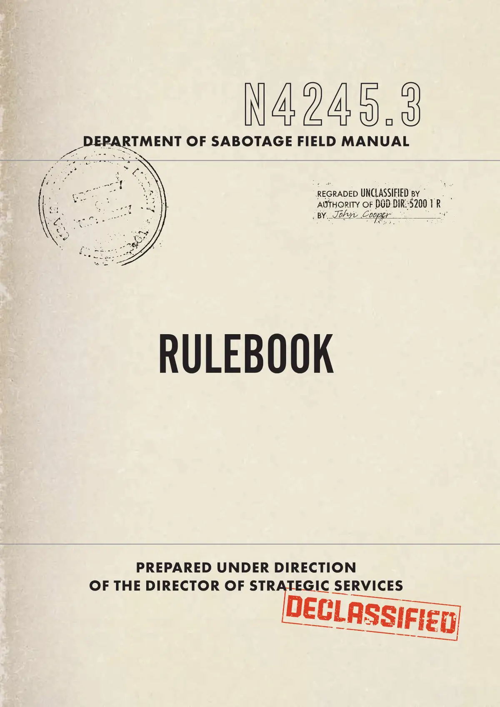
<figcaption>原版规则书 · 第 1 页（点击图片放大）</figcaption>
</figure>


<figure>
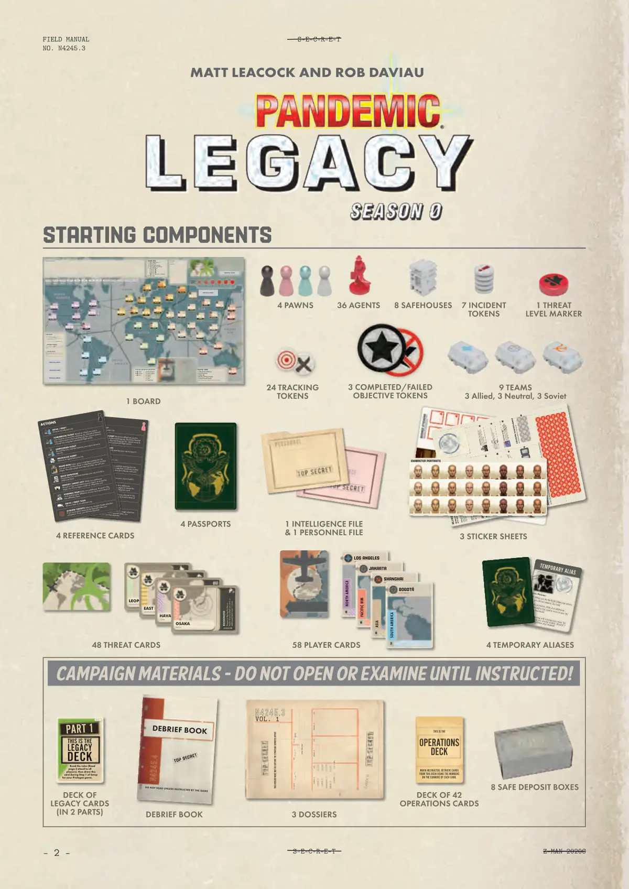
<figcaption>原版规则书 · 第 2 页（点击图片放大）</figcaption>
</figure>


<figure>
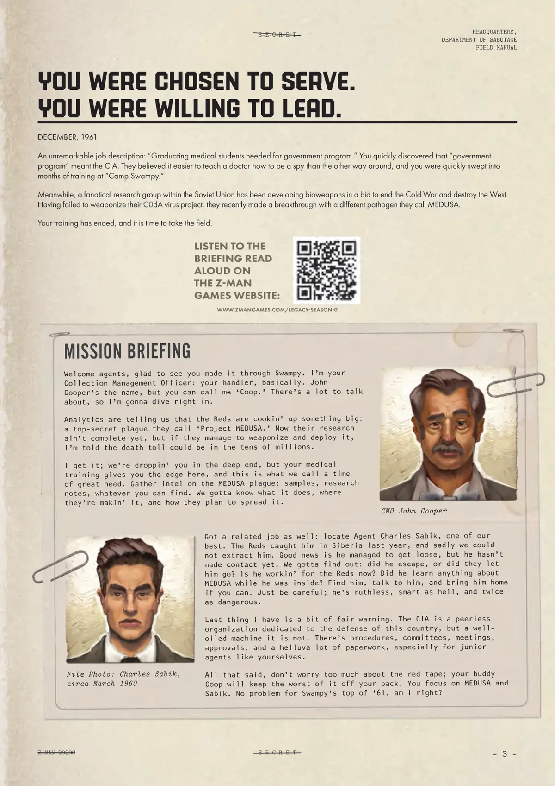
<figcaption>原版规则书 · 第 3 页（点击图片放大）</figcaption>
</figure>


<figure>
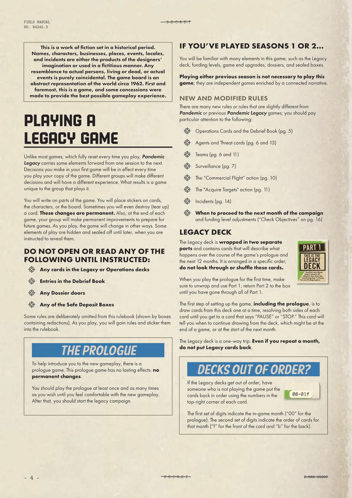
<figcaption>原版规则书 · 第 4 页（点击图片放大）</figcaption>
</figure>


<figure>
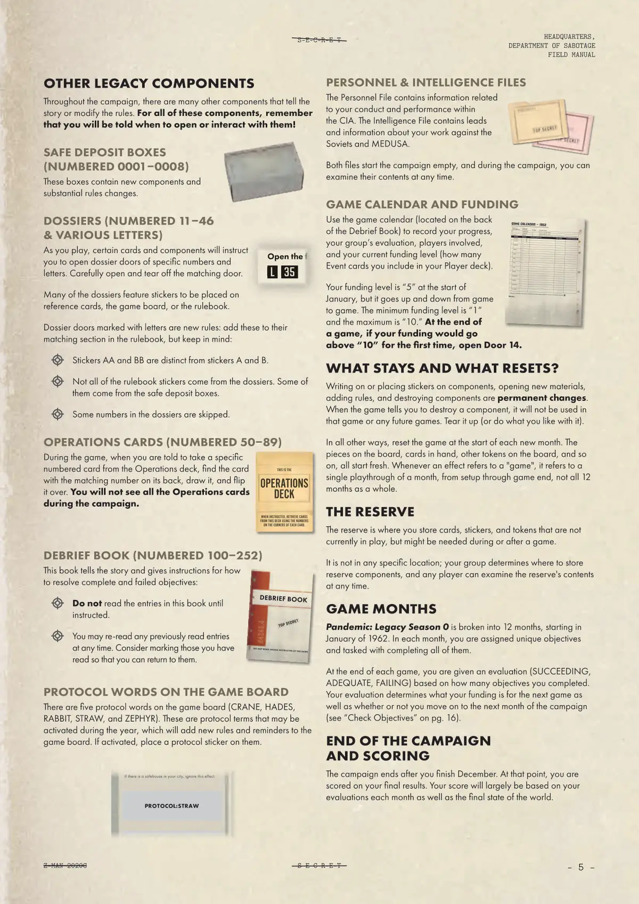
<figcaption>原版规则书 · 第 5 页（点击图片放大）</figcaption>
</figure>


<figure>
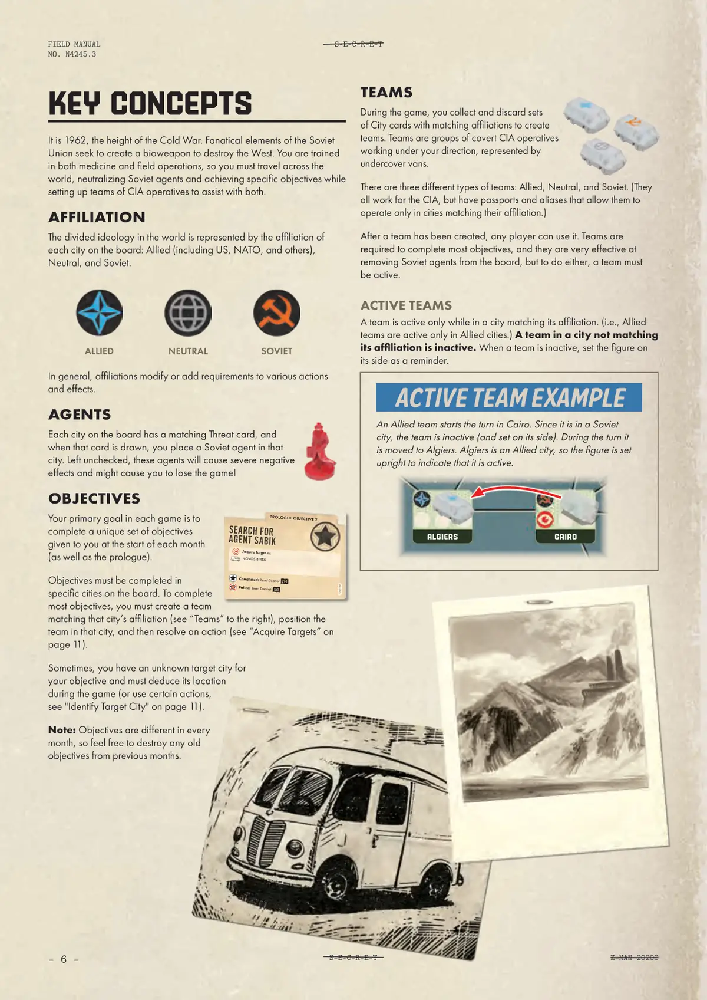
<figcaption>原版规则书 · 第 6 页（点击图片放大）</figcaption>
</figure>


<figure>
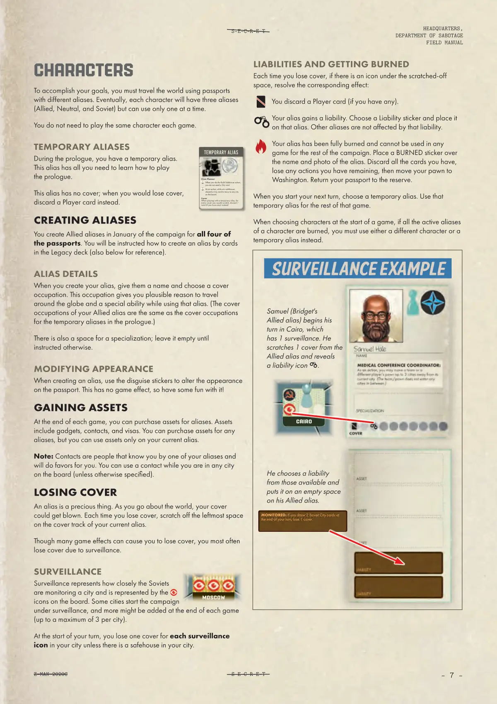
<figcaption>原版规则书 · 第 7 页（点击图片放大）</figcaption>
</figure>


<figure>
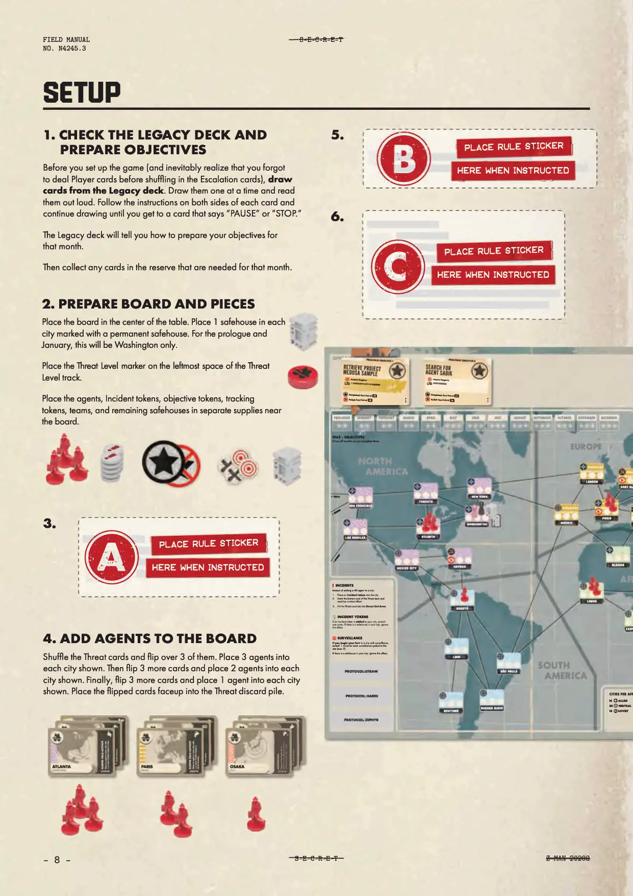
<figcaption>原版规则书 · 第 8 页（点击图片放大）</figcaption>
</figure>

<details class="mt-fold">
<summary>📝 第 8 页 AI 机翻对照（点击展开）</summary>
<div class="mt-body"><h2>战地手册</h2>

<h2>编号 N4245.3</h2>

<p>S E-6-ft-E-T</p>

<h2>设置</h2>

<h2>1. 检查传承牌库并</h2>

<h2>准备目标</h2>

<p>在设置游戏之前（并不可避免地意识到你在混入升级卡牌前忘记分发玩家卡牌），从传承牌库中抽取卡牌。一次抽取一张并大声朗读。遵循每张卡牌两面的说明，继续抽取直到你抽到一张标有"暂停"或"停止"的卡牌。传承牌库将告诉你如何为当月准备你的目标。</p>

<p>然后收集储备中当月需要的任何卡牌。</p>

<h2>2. 准备版图和棋子</h2>

<p>将版图放在桌子中央。在每个标有永久安全屋的城市放置1个安全屋。对于序幕和一月，这仅会是华盛顿。</p>

<p>将威胁等级标记放在威胁等级轨道的最左侧空间。</p>

<p>将特工、事件指示物、目标指示物、追踪指示物、团队和剩余的安全屋放在版图附近的单独供应区中。</p>

<p>3.</p>

<p>-­.-</p>

<h2>I 放置规则贴纸 I</h2>

<p>I</p>

<h2>在指示位置</h2>

<h2>4. 向版图添加特工</h2>

<p>洗混威胁卡并翻开3张。在每个显示的城市中放置3名特工。然后再翻开3张卡牌，并在每个显示的城市中放置2名特工。最后再翻开3张卡牌，并在每个显示的城市中放置1名特工。将翻开的卡牌面朝上放入威胁弃牌堆。</p>

<p>_____,j]</p>

<p>5.</p>

<h2>1 放置规则贴纸 ]</h2>

<p>-</p>

<h2>在指示位置</h2>

<p>-</p>

<p>-</p>

<p>-</p>

<p>6.</p>

<p>®-""""--ml</p>

<p>@•-•-EJ</p>

<h2>! 事件</h2>

<p>ln.-dofoddogodo000'1boA!yc</p>

<p>I,</p>

<p>Pla&lt;,anlHNlonl--tM..,._</p>

<p>2 .</p>

<p>.._ ... i.o.-_.of,.,,n.,.o1"'"'(""°</p>

<h2>- 事件指示物</h2>

<h2>@ 监视</h2>

<p>11,.. ...... ;.,._, ..... i..city ___ _</p>

<p>BCi.:,:,D,.,k,oo,l............,,,l"'""'io!l,o</p>

<p>,, . ,. .... ..,,, .. ;,,..,.,...,,_. .... ,_</p>

<h2>放置规则贴纸 1</h2>

<h2>在指示位置</h2>

<p>®"-""""""""'E?I</p>

<p>®•'"•-•-a</p>

<ul>
  <li>8 -</li>
</ul>

<p>S E 6 R E 'f</p>

<h2>MQAU.IID</h2>

<p>20()raJT1tAL</p>

<p>M fDSOVIIT</p></div>
</details>

<figure>
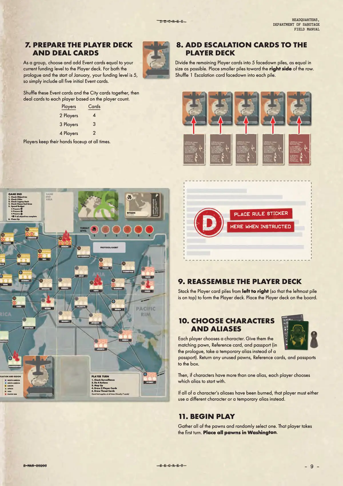
<figcaption>原版规则书 · 第 9 页（点击图片放大）</figcaption>
</figure>

<details class="mt-fold">
<summary>📝 第 9 页 AI 机翻对照（点击展开）</summary>
<div class="mt-body"><h2>游戏结束</h2>

<h2>7. 准备玩家牌库并发牌</h2>

<p>作为一个团体，选择并添加与你们当前资金等级相等的事件卡到玩家牌库中。对于序幕和一月开始，你们的资金等级是5，所以只需包含全部五张初始事件卡。</p>

<p>将这些事件卡和城市卡洗在一起，然后根据玩家数量发牌给每位玩家。</p>

<p>玩家</p>

<p>牌数</p>

<p>2位玩家</p>

<p>3位玩家</p>

<p>4位玩家</p>

<p>玩家始终保持手牌面朝上。</p>

<ol>
  <li>检查目标</li>
  <li>检查城市</li>
  <li>检查遗留牌库</li>
  <li>检查游戏结束区域</li>
</ol>

<h3>5. 花费预算</h3>

<p>2位玩家：0</p>

<p>3位玩家：8</p>

<p>4位玩家：10</p>

<p>+ 如果所有目标已完成</p>

<h3>6. 清理</h3>

<h2>玩家回合</h2>

<h3>1. 检查监视</h3>

<ol>
  <li>执行行动</li>
  <li>清理</li>
  <li>摸2张玩家牌</li>
  <li>摆威胁牌</li>
</ol>

<p>手牌限制通常适用，最多7张牌</p>

<h2>总部</h2>

<h2>破坏部</h2>

<h2>战地手册</h2>

<h2>8. 添加升级卡到玩家牌库</h2>

<p>将剩余的玩家牌分成5面朝下的牌堆，尽可能大小相等。将较小的牌堆放在行的右侧。</p>

<p>将1张升级卡洗入每个牌堆面朝下。</p>

<p>-</p>

<p>-</p>

<p>11111</p>

<h2>当指示时在此处放置规则贴纸</h2>

<h2>9. 重组玩家牌库</h2>

<p>从左到右堆叠玩家牌堆（最左边的牌堆在最上面）形成玩家牌库。将玩家牌库放在版图上。</p>

<h2>10. 选择角色和代号</h2>

<p>每位玩家选择一个角色。给他们对应的棋子、参考卡和护照（在序幕中，使用临时代号代替护照）。将任何未使用的棋子、参考卡和护照放回盒中。</p>

<p>然后，如果角色有多个代号，每位玩家选择从哪个代号开始。</p>

<p>如果角色的所有代号都被烧毁，该玩家必须使用不同的角色或临时代号代替。</p>

<h2>11. 开始游戏</h2>

<p>收集所有棋子并随机选择一个。该玩家进行第一回合。将所有棋子放在华盛顿。</p>

<h2>8 E 8 R. E T</h2>

<ul>
  <li>9 -</li>
</ul></div>
</details>

<figure>
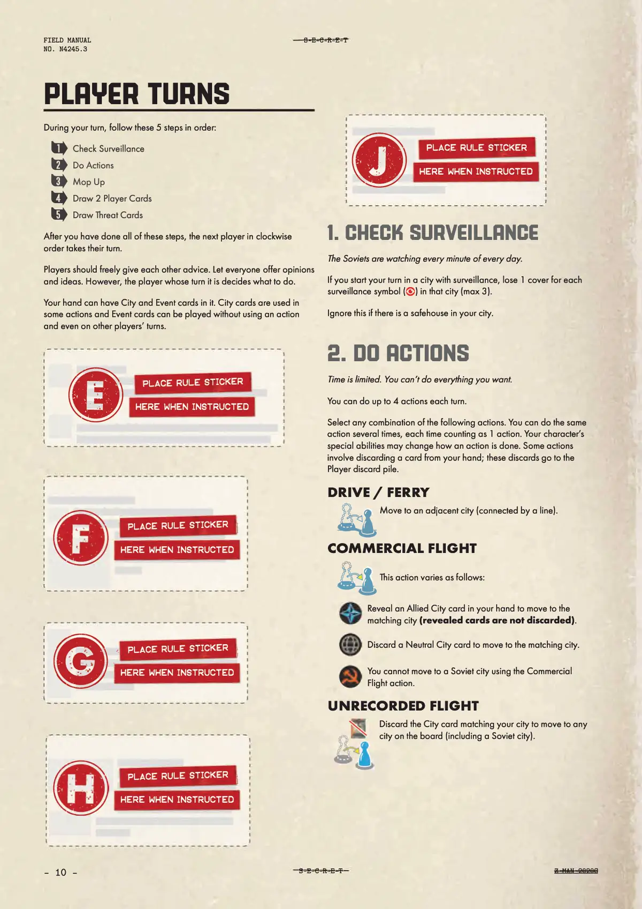
<figcaption>原版规则书 · 第 10 页（点击图片放大）</figcaption>
</figure>

<details class="mt-fold">
<summary>📝 第 10 页 AI 机翻对照（点击展开）</summary>
<div class="mt-body"><h2>战地手册</h2>

<h2>编号 N4245.3</h2>

<p>S E-6-ft-E-T</p>

<h2>玩家回合</h2>

<p>在你的回合中，按顺序执行以下5个步骤：</p>

<p>• 检查监视</p>

<p>• 执行行动</p>

<p>• 清理</p>

<p>• 摸2张玩家卡牌</p>

<p>• 摘威胁卡牌</p>

<p>完成所有这些步骤后，按顺时针方向的下一个玩家开始他们的回合。</p>

<p>玩家应自由地互相提供建议。让每个人提供意见和建议。然而，当前回合的玩家决定做什么。</p>

<p>你的手牌中可以有城市卡和事件卡。城市卡用于某些行动，事件卡可以在不使用行动的情况下打出，甚至可以在其他玩家的回合中打出。</p>

<p>G</p>

<h2>在指示时在此处放置规则贴纸</h2>

<p>:99,' ,',</p>

<p>I</p>

<p>I</p>

<p>I</p>

<p>I</p>

<h2>在指示时在此处放置规则贴纸 ,1</h2>

<h2>在指示时在此处放置规则贴纸</h2>

<p>1,</p>

<h2>在指示时在此处放置规则贴纸</h2>

<p>II</p>

<h2>在指示时在此处放置规则贴纸</h2>

<h2>在指示时在此处放置规则贴纸</h2>

<h2>1. 检查监视</h2>

<p>苏联人每时每刻都在监视着。</p>

<p>如果你在一个有监视的城市开始你的回合，则在该城市中每有一个监视符号(®)就失去1点掩护（最多3点）。</p>

<p>如果城市中有安全屋，则忽略此效果。</p>

<h2>2. 执行行动</h2>

<p>时间有限。你不能做所有想做的事。</p>

<p>每回合你可以执行最多4个行动。</p>

<p>从以下行动中选择任意组合。你可以多次执行相同的行动，每次计为1个行动。你角色的特殊能力可能会改变行动的执行方式。某些行动需要从手牌中弃掉一张卡牌；这些弃牌进入玩家弃牌堆。</p>

<h2>驾车/渡轮</h2>

<p></p>

<p>移动到相邻的城市（由道路连接）。</p>

<h2>商业航班</h2>

<p>i1</p>

<p>N</p>

<p>此行动变化如下：</p>

<p></p>

<p>展示你手中的一张盟友城市卡以移动到对应的城市（展示的卡牌不弃掉）。</p>

<p>弃掉一张中立城市卡以移动到对应的城市。</p>

<p>你不能使用商业航班行动移动到苏联城市。</p>

<h2>未记录航班</h2>

<p>弃掉与你所在城市对应的城市卡，以移动到版图上的任何城市（包括苏联城市）。</p>

<ul>
  <li>10 -</li>
</ul>

<p>S E 6 R E 'f</p>

<h2>C )MH QOQOG</h2></div>
</details>

<figure>
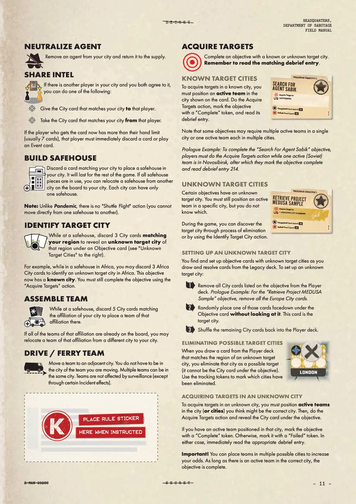
<figcaption>原版规则书 · 第 11 页（点击图片放大）</figcaption>
</figure>

<details class="mt-fold">
<summary>📝 第 11 页 AI 机翻对照（点击展开）</summary>
<div class="mt-body"><p>5-E-e-R ET</p>

<p>总部，</p>

<h2>破坏部门</h2>

<h2>战地手册</h2>

<h2>中立特工</h2>

<p>•</p>

<p>从你的城市中移除一名特工并将其放回供应池。</p>

<p>...</p>

<h2>共享情报</h2>

<p>如果你的城市中有另一名玩家，且你们双方都同意，</p>

<p>你可以执行以下操作之一：</p>

<ul>
  <li>将与你城市匹配的城市卡交给该玩家。</li>
  <li>从该玩家处获取与你城市匹配的城市卡。</li>
</ul>

<p>如果获得卡牌的玩家手牌数超过其手牌上限（通常是7张），该玩家必须立即弃掉一张牌或打出一张事件卡。</p>

<h2>建造安全屋</h2>

<p>弃掉一张与你城市匹配的卡牌，在你的城市中放置一个安全屋。它将持续到游戏结束。如果所有安全屋指示物都已使用，你可以将版图上另一个城市的安全屋搬迁到你的城市。每个城市只能有一个安全屋。</p>

<p>注意：与瘟疫不同，没有"穿梭航班"行动（你不能直接从一个安全屋移动到另一个安全屋）。</p>

<h2>识别目标城市</h2>

<p>当身处安全屋时，弃掉3张与你地区匹配的城市卡，以揭开目标卡下方的未知目标城市（参见右侧的"未知目标城市"）。</p>

<p>例如，当身处非洲的安全屋时，你可以弃掉3张非洲城市卡来识别一个非洲的未知目标城市。此目标现在有了一个已知城市。你仍必须使用"获取目标"行动来完成该目标。</p>

<h2>组建团队</h2>

<p>f'l\lJ/1</p>

<p>当身处安全屋时，弃掉5张与你城市所属派系匹配的城市卡，在该城市放置一个该派系的团队。</p>

<p>-\\ 1</p>

<p>如果该派系的所有团队都已出现在版图上，你可以将该派系的一个团队从另一个城市搬迁到你的城市。</p>

<h2>驾车/渡轮运送团队</h2>

<p>-</p>

<p>将一个团队移动到相邻城市。你不必身处你所移动的团队所在的城市。多个团队可以在同一城市。团队不受监视的影响（通过某些事件效果除外）。</p>

<h2>在指示时在此处放置规则贴纸1</h2>

<h2>获取目标</h2>

<p>™ 完成一个具有已知或未知目标城市的目标。</p>

<p>'&amp;J 记得阅读相应的简报条目。</p>

<h2>已知目标城市</h2>

<p>要在已知城市获取目标，你必须将一个活跃团队放置在卡牌所示的城市。执行获取目标行动，用"完成"指示物标记该目标，并阅读其简报条目。</p>

<p>SEARCH FO;</p>

<h2>OU&gt;GUEOOBJECT</h2>

<p></p>

<h2>特工萨比克</h2>

<p>\!!)</p>

<p>(@Accrui,.Targetin:</p>

<p> 1-jOVOSIBIRSK</p>

<p>@ co.,,,.feted:R.oadDebrieff£1</p>

<p>@Fail ... :ReadO.brialmJ</p>

<p>请注意，某些目标可能要求在一个城市中有多个活跃团队，或在多个城市中各有一个活跃团队。</p>

<p>序幕示例：要完成"寻找特工萨比克"目标，</p>

<p>当有一个活跃的（苏联）团队在诺夫哥罗德时，玩家必须执行"获取目标"行动，之后标记该目标完成并阅读简报条目214。</p>

<h2>未知目标城市</h2>

<p>某些目标有一个未知的目标城市。你仍然需要将一个活跃团队定位在特定城市，但你不知道是哪一个。</p>

<p>在游戏过程中，你可以通过排除法或使用"识别目标城市"行动来发现目标城市。</p>

<p>@co.,,,.feted:ReadDabrieflll</p>

<p>@Fail ... :ReadO.bria!mJ</p>

<h2>设置未知目标城市</h2>

<p>当你从遗产牌库中抽取并结算牌时，你会找到并设置带有未知目标城市的目标牌。要设置未知目标城市：</p>

<p>.. 从目标牌上列出的所有城市牌中移除玩家牌库中的对应牌。序章示例：对于"取回MEDUSA样本"目标，移除所有欧洲城市牌。</p>

<p>• 随机将这些牌中的一张面朝下放在目标牌下，不要查看。这张牌就是目标城市。</p>

<p>• 将剩余的城市牌洗回玩家牌库。</p>

<h2>排除可能的目标城市</h2>

<p>当你从玩家牌库中抽取一张与未知目标城市区域相匹配的牌时，你就排除了该城市作为可能的目标（它不可能是目标牌下的城市牌）。</p>

<p>使用追踪标记来标记哪些城市已被排除。</p>

<h2>在未知城市中获取目标</h2>

<p>要在未知城市中获取目标，你必须将活跃团队定位在你认为可能是正确城市的城市（或多个城市）。然后执行"获取目标"行动并揭示目标牌下的城市牌。</p>

<p>如果你有一个活跃团队定位在那个城市，用"完成"标记标记该目标。否则，用"失败"标记标记它。无论哪种情况，立即阅读相应的简报条目。</p>

<p>重要！你可以将团队放置在多个可能的城市中以增加成功几率。只要在正确的城市中有一个活跃团队，目标就完成了。</p>

<p>Z HhH z!Qz!QS</p>

<h2>8 E 8 R. E T</h2>

<ul>
  <li>11 -</li>
</ul></div>
</details>

<figure>
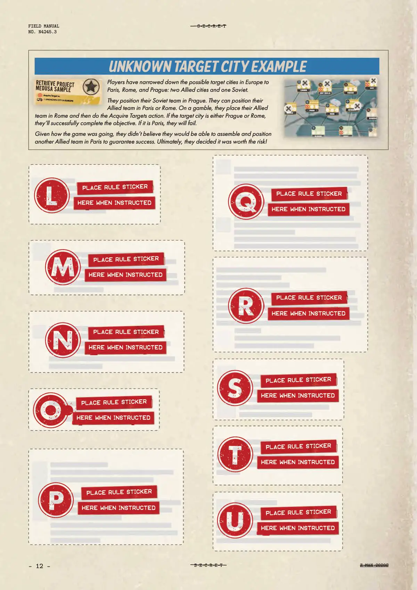
<figcaption>原版规则书 · 第 12 页（点击图片放大）</figcaption>
</figure>

<details class="mt-fold">
<summary>📝 第 12 页 AI 机翻对照（点击展开）</summary>
<div class="mt-body"><h2>战地手册</h2>

<h2>编号 N4245.3</h2>

<p>S E-6-ft-E-T</p>

<h2>未知目标城市示例</h2>

<h2>检索项目</h2>

<h2>美杜莎样本</h2>

<p>@---.,</p>

<p>玩家已将欧洲可能的目标城市缩小为</p>

<p>巴黎、罗马和布拉格：两个盟军城市和一个苏联城市。</p>

<p>JUKNoWNC/TYfNWltoPI,</p>

<p>他们将苏联团队部署在布拉格。他们可以将盟军团队部署在巴黎或罗马。他们冒险将盟军团队部署在罗马，然后执行获取目标行动。如果目标城市是布拉格或罗马，他们将成功完成任务。如果是巴黎，他们将失败。</p>

<p>考虑到游戏的进展，他们不相信能够组建并部署另一个盟军团队到巴黎以确保成功。最终，他们决定值得冒险！</p>

<p>•</p>

<h2>我放置规则贴纸 I</h2>

<h2>此处按指示放置</h2>

<h2>我放置规则贴纸 I</h2>

<h2>此处按指示放置</h2>

<h2>我放置规则贴纸 1</h2>

<p>-</p>

<h2>此处按指示放置</h2>

<h2>我放置规则贴纸 , I</h2>

<h2>此处按指示放置</h2>

<h2>我放置规则贴纸 1</h2>

<p>-</p>

<h2>此处按指示放置</h2>

<p>:9.;_.;</p>

<p>I</p>

<blockquote>
<p>?</p>
</blockquote>

<p>I</p>

<h2>我放置规则贴纸 I</h2>

<h2>此处按指示放置</h2>

<p>放置规则贴纸 i</p>

<h2>此处按指示放置</h2>

<ul>
  <li>12 -</li>
</ul>

<h2>放置规则贴纸</h2>

<h2>此处按指示放置</h2>

<p>S E 6 R E 'f</p>

<p>放置规则贴纸 i</p>

<h2>此处按指示放置</h2>

<p>放置规则贴纸 i</p>

<h2>此处按指示放置</h2>

<h2>C )MH QOQOG</h2></div>
</details>

<figure>
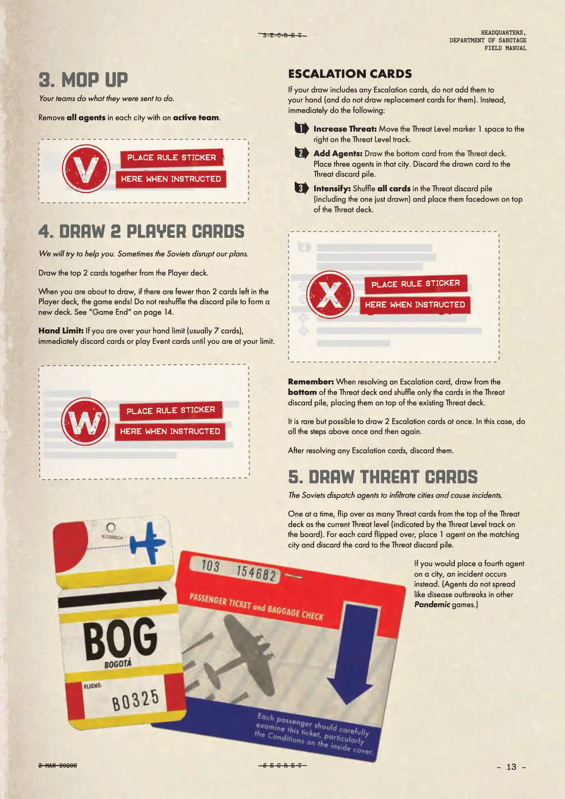
<figcaption>原版规则书 · 第 13 页（点击图片放大）</figcaption>
</figure>

<details class="mt-fold">
<summary>📝 第 13 页 AI 机翻对照（点击展开）</summary>
<div class="mt-body"><p>5-E-e-R ET</p>

<p>总部，</p>

<h2>破坏部门</h2>

<h2>战地手册</h2>

<h2>3. 清理行动</h2>

<p>你们的队伍执行他们被派去执行的任务。</p>

<p>在每个有活跃队伍的城市中移除所有特工。</p>

<h2>在指示时在此处粘贴规则贴纸 1</h2>

<p>-</p>

<h2>4. 抽取2张玩家卡牌</h2>

<p>我们会尽力帮助你们。有时苏联人会破坏我们的计划。</p>

<p>一起从玩家牌库顶抽取2张牌。</p>

<p>当你准备抽取时，如果玩家牌库中剩余牌数少于2张，游戏结束！不要将弃牌堆重新洗牌组成新牌库。参见第14页的"游戏结束"。</p>

<p>手牌上限：如果你的手牌超过上限（通常是7张），立即弃牌或打出事件卡，直到手牌达到上限。</p>

<h2>在指示时在此处粘贴规则贴纸 I</h2>

<h2>BOGOTA（波哥大）</h2>

<h2>升级卡牌</h2>

<p>如果你的抽牌中包含任何升级卡牌，不要将它们加入手牌（也不要为它们抽取替代牌）。相反，立即执行以下操作：</p>

<p>.. 增加威胁：在威胁等级轨道上，将威胁等级指示物向右移动1格。</p>

<p>• 添加特工：从威胁牌库底抽取一张牌。在该城市放置三个特工。将抽到的牌弃入威胁弃牌堆。</p>

<p>• 加剧：洗混威胁弃牌堆中的所有牌（包括刚刚抽到的牌），并将它们面朝下放在威胁牌库顶。</p>

<p>•</p>

<h2>在指示时在此处粘贴规则贴纸</h2>

<h2>在指示时在此处粘贴规则贴纸</h2>

<p>记住：在处理升级卡牌时，从威胁牌库底抽取，并且只洗混威胁弃牌堆中的牌，将它们放在现有威胁牌库顶。</p>

<p>虽然罕见但有可能一次抽取2张升级卡牌。在这种情况下，先执行上述所有步骤，然后再执行一次。</p>

<p>处理完任何升级卡牌后，将它们弃掉。</p>

<h2>5. 抽取威胁卡牌</h2>

<p>苏联人派遣特工渗透城市并制造事件。</p>

<p>一次一张，跳过威胁牌库顶部的牌，数量等于当前威胁等级（由版图上的威胁等级轨道指示）。对于每张跳过的牌，在对应的城市上放置1个特工，并将该牌弃入威胁弃牌堆。</p>

<p>如果你要在某个城市放置第四个特工，则发生事件代替。（特工不像其他疫情游戏中的疾病爆发那样传播。）</p>

<p>Z 111\H z!Qz!QS</p>

<h2>8 E 8 R. E T</h2>

<ul>
  <li>13 -</li>
</ul></div>
</details>

<figure>
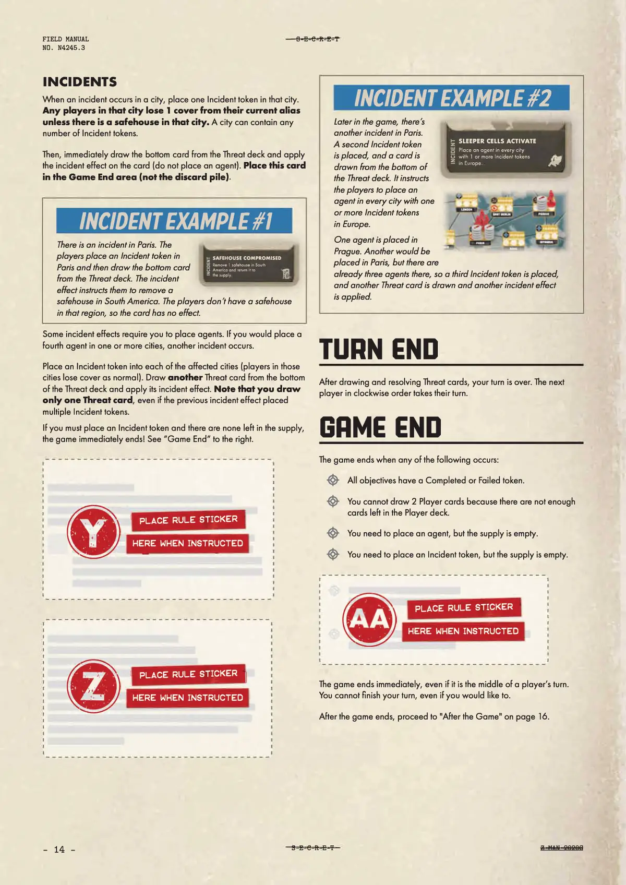
<figcaption>原版规则书 · 第 14 页（点击图片放大）</figcaption>
</figure>

<details class="mt-fold">
<summary>📝 第 14 页 AI 机翻对照（点击展开）</summary>
<div class="mt-body"><h2>战地手册</h2>

<h2>编号 N4245.3</h2>

<p>S E-6-ft-E-T</p>

<h2>事件</h2>

<p>当城市中发生事件时，在该城市放置一个事件指示物。</p>

<p>该城市中的任何玩家都会失去其当前身份的1点掩护，除非该城市中有安全屋。一个城市可以包含任意数量的事件指示物。</p>

<p>然后，立即从威胁牌库底部抽一张牌，并应用牌上的事件效果（不要放置特工）。将这张牌放置在游戏结束区域（不是弃牌堆）。</p>

<h2>事件示例 #1</h2>

<p>巴黎发生了一起事件。</p>

<p>玩家们在巴黎放置一个事件指示物，</p>

<p>然后从威胁牌库底部抽一张牌。事件</p>

<p>效果指示他们移除南美的一个安</p>

<p>全屋并将其返回到供应区。</p>

<p>!z: 安全屋被破坏</p>

<p>移除南美的一个安全屋并将其返回到供应区</p>

<p>玩家们在该地区没有安全屋，所以这张牌没有效果。</p>

<p>一些事件效果要求你放置特工。如果你要在一个或多个城市放置第四个特工，则再次发生事件。</p>

<p>在每个受影响的城市中放置一个事件指示物（这些城市中的玩家正常失去掩护）。从威胁牌库底部再抽一张威胁牌并应用其事件效果。请注意，即使前一个事件效果放置了多个事件指示物，你也只抽一张威胁牌。</p>

<p>如果你必须放置事件指示物但供应区中没有剩余的指示物，游戏立即结束！请参阅右侧的"游戏结束"。</p>

<h2>' 在指示时在此处放置规则贴纸</h2>

<h2>1 在指示时在此处放置规则贴纸</h2>

<h2>事件示例 #2</h2>

<p>游戏后期，巴黎再次发生事件。</p>

<p>放置第二个事件指示物，</p>

<p>并从威胁牌库底部抽一张牌。它指示玩家</p>

<p>在欧洲每个有一个或多个事件指示物的城市</p>

<p>放置一个特工。</p>

<p>在布拉格放置了一个特工。</p>

<p>另一个特工本应放置在巴黎，但那里已经有</p>

<p>!z: 睡眠特工激活</p>

<p>在欧洲每个有1个或多个事件指示物的城市</p>

<p>放置一个特工</p>

<p>三个特工，因此放置了第三个事件指示物，</p>

<p>并抽了另一张威胁牌，应用了另一个事件效果。</p>

<h2>回合结束</h2>

<p>在抽取并解决威胁牌后，你的回合结束。按顺时针顺序的下一位玩家开始他们的回合。</p>

<h2>游戏结束</h2>

<p>当发生以下任何情况时，游戏结束：</p>

<p>r</p>

<p>所有目标都已放置"已完成"或"已失败"指示物。</p>

<p>r</p>

<p>你无法抽取2张玩家牌，因为玩家牌库中没有足够的牌。</p>

<p>r</p>

<p>你需要放置特工，但供应区已空。</p>

<p>r</p>

<p>你需要放置事件指示物，但供应区已空。</p>

<h2>在指示时在此处放置规则贴纸</h2>

<p>游戏立即结束，即使是在玩家回合的中间。</p>

<p>即使你想要，也无法完成你的回合。</p>

<p>游戏结束后，请转到第16页的"游戏之后"。</p>

<ul>
  <li>14 -</li>
</ul>

<p>S E 6 R E 'f</p>

<h2>C )MH QOQOG</h2></div>
</details>

<figure>
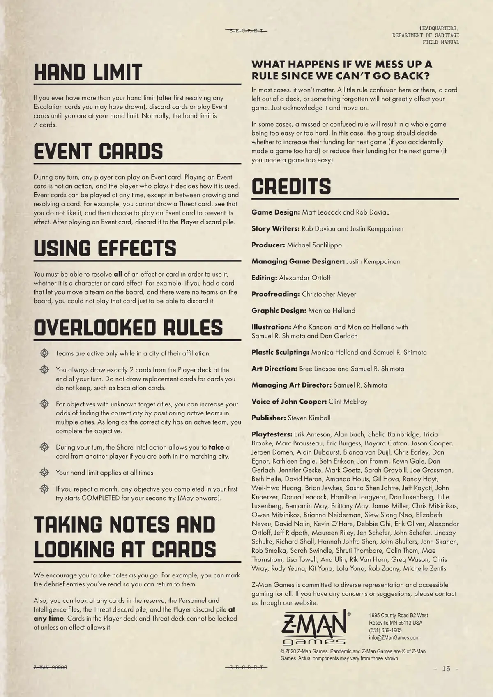
<figcaption>原版规则书 · 第 15 页（点击图片放大）</figcaption>
</figure>


<figure>
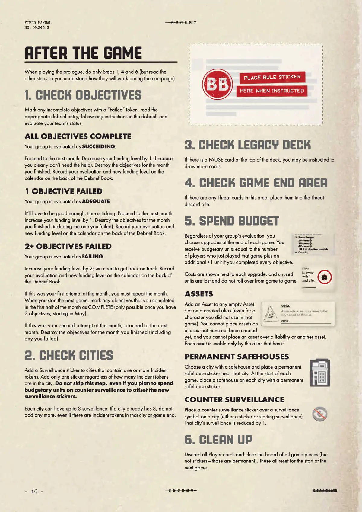
<figcaption>原版规则书 · 第 16 页（点击图片放大）</figcaption>
</figure>

<details class="mt-fold">
<summary>📝 第 16 页 AI 机翻对照（点击展开）</summary>
<div class="mt-body"><h2>战地手册</h2>

<h2>编号 N4245.3</h2>

<p>S E-6-ft-E-T</p>

<h2>游戏结束后</h2>

<p>玩序章时，只执行步骤1、4和6（但请阅读其他步骤，以便了解它们在战役期间将如何运作）。</p>

<h2>1. 检查目标</h2>

<p>用"失败"指示物标记任何未完成的目标，阅读相应的简报条目，遵循简报中的任何指示，并评估你团队的状况。</p>

<h2>所有目标完成</h2>

<p>你的小组被评估为成功。</p>

<p>进入下一个月。将你的资金等级降低1点（因为你显然不需要帮助）。销毁你完成月份的目标。在简报手册背面的日历上记录你的评估和新资金等级。</p>

<h2>1个目标失败</h2>

<p>你的小组被评估为尚可。</p>

<p>这必须足够好了：时间正在流逝。进入下一个月。将你的资金等级提高1点。销毁你完成月份的目标（包括你失败的那个）。在简报手册背面的日历上记录你的评估和新资金等级。</p>

<h2>2个或更多目标失败</h2>

<p>你的小组被评估为失败。</p>

<p>将你的资金等级提高2点；我们需要重回正轨。在简报手册背面的日历上记录你的评估和新资金等级。</p>

<p>如果这是你本月第一次尝试，你必须重复本月。当你开始下一局游戏时，将你在本月上半部分完成的目标标记为完成（只有当你拥有3个目标时才可能，从5月开始）。</p>

<p>如果这是你本月第二次尝试，进入下一个月。销毁你完成月份的目标（包括任何你失败的目标）。</p>

<h2>2. 检查城市</h2>

<p>为包含一个或更多事件指示物的城市添加一个监视贴纸。无论城市中有多少事件指示物，只添加一个贴纸。即使你计划花费预算单位进行反监视来抵消新的监视贴纸，也不要跳过此步骤。</p>

<p>每个城市最多可以有3级监视。如果一个城市已经有3级，即使游戏结束时有事件指示物在该城市中，也不要再添加任何监视贴纸。</p>

<h2>放置规则贴纸</h2>

<h2>在指示时放置于此</h2>

<h2>3. 检查遗产牌库</h2>

<p>如果牌库顶部有一张暂停卡，你可能会被指示抽取更多卡牌。</p>

<h2>4. 检查游戏结束区域</h2>

<p>如果此区域中有任何威胁卡，将它们放入威胁弃牌堆。</p>

<h2>5. 花费预算</h2>

<p>无论你的小组评估如何，你</p>

<p>在每局游戏结束时选择升级。你</p>

<p>获得的预算单位等于刚刚玩过该游戏的玩家人数，如果你完成了所有目标，则额外获得+1单位。</p>

<h2>如果所有目标完成</h2>

<p>6，克利昂上升</p>

<p>行动，</p>

<p>每个升级旁边的显示费用，未使用的单位会丢失，不会在游戏之间结转。</p>

<h2>资产</h2>

<p>将资产添加到任何已创建的别名（包括您在该游戏中未使用的角色）的空白资产槽中。您不能将资产放置在尚未创建的别名上，也不能将资产放置在负债或其他资产之上。</p>

<p>每个资产只能由拥有它的别名使用。</p>

<h2>永久安全屋</h2>

<p>选择一个有安全屋的城市，在该城市附近放置一个永久安全屋贴纸。在每个游戏开始时，在每个有永久安全屋贴纸的城市放置一个安全屋。</p>

<h2>反监控</h2>

<p>将反监控贴纸覆盖在城市上的监控符号上（无论是贴纸还是起始监控）。该城市的监控减少1点。</p>

<h2>6. 清理</h2>

<p>弃置所有玩家卡牌并清除版图上的所有游戏棋子（但贴纸除外——那些是永久的）。这些都会在下一局游戏开始时重置。</p>

<ul>
  <li>16 -</li>
</ul></div>
</details>
        </div>

        <footer class="source-note">
<p>来源：<a href="https://cdn.svc.asmodee.net/production-zman/uploads/2024/09/Legacy-Season-0-Rulebook.pdf" target="_blank" rel="noopener">Z-Man Games / Asmodee 官方（zmangames.com 游戏页 Rules 下载）</a>（2020 Legacy-Season-0-Rulebook.pdf）· 译文仅供个人学习查阅，规则内容归 Z-Man Games (Asmodee) 及版权方所有 · 原文版權與商标归原出版方。</p>
</footer>
      </article>
    </main>
  </div>

  <button class="to-top" aria-label="返回顶部" data-i18n-aria="backTop">↑</button>
  <script src="../assets/js/i18n.js"></script>
  <script src="../assets/js/main.js"></script>
</body>
</html>
